무선설비기사 (2002-03-10 기출문제)
1과목: 디지털 전자회로
1. RC결합 저주파 증폭회로의 이득이 높은 주파수에서 감소되는 이유는?
- 부성저항이 생기기 때문
- 증폭기 소자의 특성이 변하기 때문
- 결합 캐패시턴스의 영향 때문에
- 출력회로의 병렬 캐패시턴스 때문에
(정답률: 알수없음)

2. 그림(a) 회로에 그림(b)와 같은 전압을 입력측에 인가 할때 정상상태에서의 출력전압 Vo는?
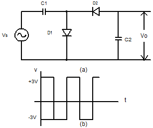
- 3(V)의 진폭을 갖는 부(負)의 펄스
- 3(V)의 진폭을 같는 정(正)의 펄스
- -6(V)의 직류전압
- +3(V)의 직류전압
(정답률: 알수없음)
3. 다음 회로에 대한 설명 중 옳은 것은?
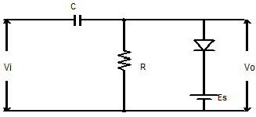
- 출력신호의 상단레벨을 일정하게 유지한다.
- 출력신호의 하단레벨을 일정하게 유지한다.
- 반파정류 회로이다.
- 클리퍼이며 일정값 이하로 출력신호의크기를 제한한다.
(정답률: 알수없음)
4. 다음과 같은 회로의 출력은?
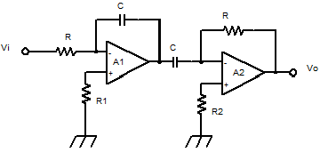
- 0
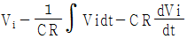
- Vi
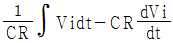
(정답률: 알수없음)
5. 위상변조(PM: Pulse Modulation)의 설명으로 틀린 것은?
- 반송파의 위상을 신호파의 진폭에 따라 변화시키는 변조방식이다
- 신호파는 V1 = Vscosωst 이다.
- 반송파는 V(t) = Vcsin(ωct + θ)이다.
- 피변조파는 V(t) = Vcsin(ωct + msinωst이다.
(정답률: 알수없음)
6. 슈미트 트리거(Schmitt trigger) 회로이다. 이 회로의 설명 중 틀린 것은?
- 두 개의 안정 상태를 갖는 회로이다.
- 펄스 파형을 만드는 회로로는 사용하지 못한다.
- 궤환 효과는 공통 에미터 저항을 통하여도 이루어진다.
- 입력 전압의 크기가 on, off상태를 결정하여준다.
(정답률: 알수없음)
7. 그림은 무슨 Flip-Flop 회로인가?
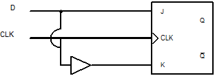
- M-S F/F
- S-R F/F
- CLK F/F
- D F/F
(정답률: 알수없음)
8. 변조신호 주파수가 2[KHz] 인 FM파의 점유주파수 대역폭은 얼마인가? (단, 점유 주파수편이는 10[KHz] 임)
- 38[KHz]
- 36[KHz]
- 24[KHz]
- 20[KHz]
(정답률: 알수없음)
9. 다음 논리회로의 명칭은? (단, E : enable, S : select )
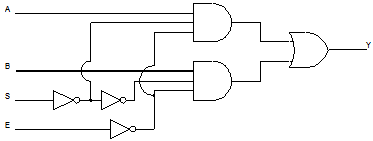
- 2×1 디코더
- 2×1 멀티플랙서
- 4×1 엔코더
- 2×1 디멀티플랙서
(정답률: 알수없음)
10. 다음 중 멀티바이브레이터를 구성할 때 필요한 요소가 아닌 것은?
- 트랜지스터
- 콘덴서
- 저항
- 코일
(정답률: 알수없음)
11. 다음 중 발진주파수가 가장 안정적인 발진기는?
- 수정발진기
- 윈브리지발진기
- 이상형발진기
- 음향발진기
(정답률: 알수없음)
12. SRAM과 DRAM에 대한 설명중 틀린 것은?
- DRAM은 리프레쉬 타임이 있다.
- SRAM은 DRAM에 비해 데이터 저장용량을 높이 는데 용이하다.
- DRAM과 SRAM은 전원을 끊으면 데이터가 소실 된다.
- SRAM에는 리프레쉬 타임이 없다.
(정답률: 알수없음)
13. 정류회로에서 맥동율을 나타내는 수식으로 올바른 것은?
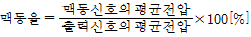
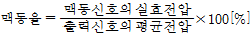
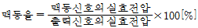
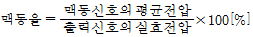
(정답률: 알수없음)
14. 그림과 같은 플립 플롭 (Flip-Flop)회로를 3개 직력접속한 후 입력에 1000[Hz] 의 펄스를 가했다면 마지막 단 플립 플롭에 나타나는 신호의 주파수는 몇[Hz]인가?
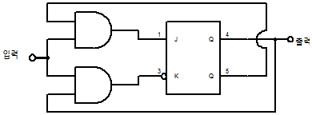
- 125
- 250
- 750
- 4000
(정답률: 알수없음)
15. Exclusive-OR 와 Exclusive-NOR에 해당하는 논리식을 상호 변환한 아래의 식 중에서 틀린 것은?
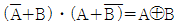
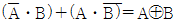
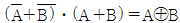
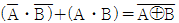
(정답률: 알수없음)
16. 어떤 출력증폭회로의 입력과 출력파형이다. 이 증폭회로의 설명으로 맞는 것은?
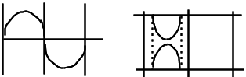
- C급 증폭으로 고주파 대출력에 적합하다.
- B급 증폭으로 중대역 대출력에 적합하다.
- A급 증폭으로 소신호 전압증폭에 적합하다.
- AB급 증폭으로 저주파 전류증폭에 적합하다.
(정답률: 알수없음)
17. 그림과 같은 연산증폭기 회로에서 항한 3(dB) 주파수는?
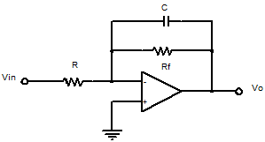
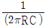
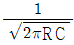
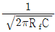
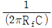
(정답률: 알수없음)
18. 논리식
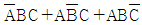
을 간단히 하면?- B(A + C)
- AB + BC + AC
- C(A + B)
- A + B + C
(정답률: 알수없음)
19. 다음 Karnaugh-map을 논리식으로 간략화 한 결과식은?
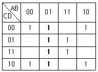
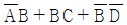
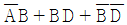
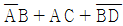
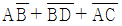
(정답률: 알수없음)
20. 다음의 회로는 Ic를 안정하게 하기 위한 회로이다. 무슨 보상 방법인가?
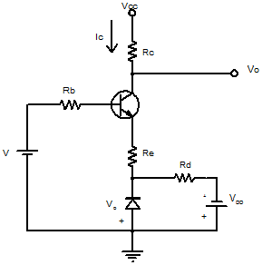
- 전류 보상법
- 온도 보상법
- 전압 보상법
- 궤환 보상법
(정답률: 알수없음)
2과목: 무선통신 기기
21. 저잡음증폭기와 관계없는 것은?
- Magnetron증폭기
- 파라메트릭 증폭기
- GaAs MESFET증폭기
- 터널 다이오드 증폭기
(정답률: 알수없음)
22. 무선통신의 방해요인에 대한 설명중 틀린 것은?
- 감쇠란 신호가 전파되면서 주파수에 따라 그 크기가 작아지는 것을 말한다.
- 왜곡이란 신호가 전파되면서 일그러지는 것을 말한다.
- 잡음이란 필요한 신호속에 혼입되어 정상적인 수신 또는 처리를 방해하는 전기신호를 말한다.
- 간섭이란 원하는 신호의 수신을 방해하는 에너지를 말한다.
(정답률: 알수없음)
23. 무선 송신기에서 많이 사용되는 C급 증폭기에 대한 설명으로 옳은 것은?
- 선형 증폭을 하지만 효율은 매우 낮다.
- 증폭기 2개를 푸시풀로 접속하여 사용한다.
- 증폭과정에서 고조파가 발생되므로 주파수 체배기로 사용된다.
- 선형 증폭 동작을 하며 사인파 입력에 대해서 360°도통각을 갖는다.
(정답률: 알수없음)
24. 단일 정현파의 변조주파수 1000㎑로 주파수 변조한 결과 최대주파수 편이가 5000㎑이었다. 이때의 변조지수는?
- 1.2
- 1.6
- 3.4
- 5.0
(정답률: 알수없음)
25. 주파수 변조를 진폭 변조와 비교할 경우 다음중 틀린 것은?
- 신호대 잡음비가 좋아진다.
- 초단파대 통신에 적합하다.
- 에코의 영향이 많아진다.
- 주파수 대역폭이 넓다.
(정답률: 알수없음)
26. 실효 선택도에 속하지 않는 것은?
- 영상주파 억압효과
- 감도억압효과
- 혼변조
- 상호변조
(정답률: 알수없음)
27. 저궤도 위성통신 서비스 방식이 아닌 것은?
- 이리듐
- 글로벌 스타
- DBS(Direct Broddcasting Satellite)
- 오딧세이
(정답률: 알수없음)
28. 연축전지에 과대한 전류로 충전하면 어떠한 현상이 일어나는가?
- 극판의 부식현상
- 자기방전의 증대현상
- 분할성 유산염의 발생현상
- 극판의 만곡현상
(정답률: 알수없음)
29. NAVTEX수신기의 운용에 있어서 수신을 거부할수 없는 것은?
- 기상경보
- 기상방송
- 데카정보
- 로란정보
(정답률: 알수없음)
30. AM방송국은 보통 540㎑에서 1600㎑의 주파수범위를 사용하고 있으며 대역폭은 10㎑이다. AM라디오 수신기의 RF필터의 최소 대역폭은 얼마인가?
- 1600㎑
- 540㎑
- 2140㎑
- 10㎑
(정답률: 알수없음)
31. 정류기의 부하단의 평균전압은 200V, 맥동률이 2%일 때 교류분의 전압은?
- 8V
- 6V
- 4V
- 2V
(정답률: 알수없음)
32. FM수신기 구성이 DSB 수신기 또는 SSB 수신기와 비교하여 볼 때 다른점이 아닌 것은?
- 통과 대역폭이 넓은 것
- 진폭 제한기를 사용하는 것
- Ring 복조기를 사용하는 것
- 스켈치 회로를 사용하는 것
(정답률: 알수없음)
33. 간접FM방식에서 사용되는 전치보상회로의 설명중 틀린 것은?
- 신호 주파수에 반비례하는 회로이다.
- 미분회로의 일종이다.
- PM을 FM으로 만드는데 쓰인다.
- 입출력 위상차는 90°이다.
(정답률: 알수없음)
34. 위성의 다원접속기술에서 패킷전송망에 많이 활용되는 회선할당방식은?
- 사전할당방식
- 요구할당방식
- 개방할당방식
- 임의할당방식
(정답률: 알수없음)
35. 다음 FM 송신기의 보조회로가 아닌 것은?
- 순시주파수편이 제어회로
- Pre-emphasis회로
- 진폭제한기
- 자동주파수 제어회로
(정답률: 알수없음)
36. 무선 송신기에서 발생하는 고조파 방지 대책과 관계가 먼 것은?
- 종단증폭기와 안테나 사이를 소결합한다.
- 동조회로의 Q를 되도록 낮게 설계한다.
- 전력증폭기를 push-pull구조를 사용한다.
- 급전선에 트랩 또는 필터를 삽입한다.
(정답률: 알수없음)
37. 전계강도 측정기로 강한 전계강도를 측정할 때 오차가 생긴 이유로 가장 큰 원인은?
- 수신기의 이득이 작을 때
- 수신기의 이득이 클 때
- 수신기의 직선성이 불량할 때
- 수신기의 주파수 특성이 불량할 때
(정답률: 알수없음)
38. 직선검파기에서 Diagonal Clipping이 발생하는 원인은?
- 평균 검파기는 부하에 저항만 접속되어서
- 검파회로의 시정수가 너무 커서
- 직선 검파기의 출력측에는 직류 성분이 포함되어서
- 직선 검파기의 출력이 커서
(정답률: 알수없음)
39. 지구와 위성의 기하학 각도가 다음 그림과 같을 때 최대 전송지연시간을 나타내는 식은? (단, R은 지구반경, θ는 안테나 최소 양각, h는 위성고도, β는 통신영역 중심각, C는 광속도이다.)
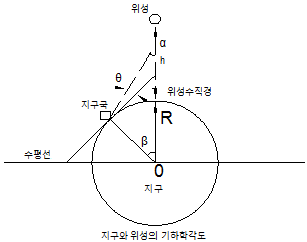
- {2(R+h)/C}ㆍ{sinβ/cos(β+θ)}
- {(R+h)/c}ㆍㆍ(sinβ/cosθ)
- {2(R+h)/c)ㆍ{(sin(β+θ)}/cosθ
- {2(R+h)/c}(sinβ/cosθ)
(정답률: 알수없음)
40. 급전선의 신호 인덕턴스를 축정하기 위하여 그림과 같은 회로를 구성하고 수위치 S를 LS1 으로 놓고 공진시켰을 때 주파수를 f1이라 하고 LS2로 놓고 공진시켰을때 주파수를 f2라 한다. f1=2f2라 하면, 실효 인덕턴스 Le는?
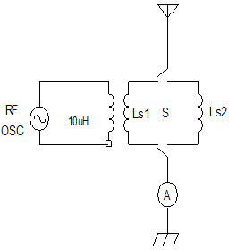
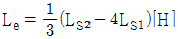
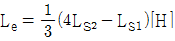
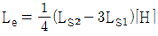
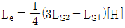
(정답률: 알수없음)
3과목: 안테나 공학
41. 반파장 안테나의 뒷면에 평면 반사기를 설치하여 안테나 이득을 높이려 한다. 안테나와 반사기의 거리는?
- λ
- λ/8
- λ/4
- λ/2
(정답률: 알수없음)
42. Bellini-Tosi 안테나에서 전계강도를 최대로 하려면 탐색코일의 방향과 전파도래 방향의 위상차를 얼마로 해야하는가?
- 0°
- 15°
- 30°
- 45°
(정답률: 알수없음)
43. 전리층 전파에서 발생되는 페이딩을 방지하기 위해서는 종류에 따라 적당한 방법을 선택하여야 한다. 적당한 방법이 아닌 것은?
- 간섭성 페이딩에 대해서는 공간다이버시트와 주파수 다이버시트를 합성하여 사용한다.
- 편파성 페이딩에 대해서는 서로 수직으로 놓인 안테나를 사용하여 합성한다.
- 흡수성 페이딩에 대해서는 AGC회로를 첨가하여 방지한다.
- 선택성 페이딩은 공간다이버시티가 적합하다.
(정답률: 알수없음)
44. 지구의 실제방경을 r, 등가지구반경을 R, 등가지구 반경계수를 K라고 할 때, 이들은 어떤 관계식을 갖는가?
- R=Kr
- R=Kr2
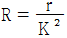
- r=KR
(정답률: 알수없음)
45. 미소다이폴 안테나에서 발생된 전계 강도를 계산하는 식은?
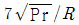
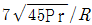
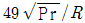
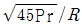
(정답률: 알수없음)
46. 다음 중 안테나의 복사효과를 나타내는 설명으로 틀린 것은?
- 정관형 안테나에서 미터-암페어를 사용한다.
- 제펠린 안테나에서 이득을 사용한다.
- 헤리컬 안테나에는 복사전력이 사용된다.
- 파라보라 안테나에는 실효개구면적을 사용한다.
(정답률: 알수없음)
47. 다음 중 도파관형 메탈렌즈에서 굴절률을 0.8로 하기 위한 금속판의 간격은 2.5㎝이다. 이때 사용주파수는?
- 10㎓
- 20㎓
- 30㎓
- 50㎓
(정답률: 알수없음)
48. 일반적으로 안테나로부터 먼거리에서 전자장은 어떤 자태로 진행하는가?
- TE mode
- TEM mode
- TM mode
- Hybrid mode
(정답률: 알수없음)
49. 장파의 전파 특성에 대한 설명 중 틀린 것은?
- 지표파는 파장이 길수록 감쇄가 크다.
- 지표면의 도전율이 클수록 감쇄가 작다.
- 해면상에서는 먼거리까지 잘 전파된다.
- 근거리는 지표파에 의하여 장거리는 지표파와 전리층파에 의해서 통신이 행해진다.
(정답률: 알수없음)
50. 절대이득의 기준안테나로 사용되는 안테나는?
- 무손실
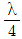
수직 접지안테나 - 무손실 등방성안테나
- 무손실
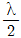
다이폴 안테나 - 무손실 루우프안테나
(정답률: 알수없음)
51. 전파의 회절현상에 대한 설명 중 틀린 것은?
- 초단파대에서는 발생하지 않는다.
- 주파수가 낮을수록 심하다.
- 장중파대에서 많이 일어난다.
- 구면대지에서는 회절손실이 크다.
(정답률: 알수없음)
52. 특성 임피던스가 Z0인 전송선로가 ZL=(0.5+j0.9)Z0 인 부하로 종단된 경우 정재파비 S를 구하면?
- 0.589
- 1.029
- 2.⑤
- 3.86
(정답률: 알수없음)
53. 단파 안테나에 주로 사용되는 안테나가 아닌 것은?
- Zeppeline antenna
- Beam antenna
- Rhombic antenna
- Adcock antenna
(정답률: 알수없음)
54. 일반적인 동축케이블내부의 전자계는?
- TEM 모드이고 차단파장은 없다.
- TEM 모드이고 차단파장은 중심도체 외직경의2배이다.
- TM 모드이고 차단파장은 없다.
- TM 모드이고 차단파장은 중심도체 외직경의2배이다.
(정답률: 알수없음)
55. 2개의 반사판을 갖는 안테나는?
- 다이폴 안테나
- 야기-우다 안테나
- 렌즈안테나
- 카세그레인 안테나
(정답률: 알수없음)
56. 임피던스가 50Ω인 급전선의 입력 전력 및 반사전력이 각각 50W 및 8W일때의 전압 정재파비는?
- 6.25
- 2.33
- 0.4
- 0.16
(정답률: 알수없음)
57. 루우프 안테나를 방행탐지에 사용할 경우 180°불확정이 발생하여 전파도래 방향을 결정할 수 없다. 다음 중 이러한 단점을 개선한 안테나는?
- 수직 안테나와 루우프 안테나를 조합한 안테나
- 비버리지 안테나와 루우프안테나를 조합한 안테나
- 애드콕 안테나
- 베르니토시 안테나와 루우프 안테나를 조합한 안테나
(정답률: 알수없음)
58. 송신안테나의 높이가 30.25m이고, 수신 안테나의 높이가 20.25m일 때 초단파의 직접파 최대 가시거리는 얼마인가?
- 20.5m
- 32.2m
- 41.1m
- 53.4m
(정답률: 알수없음)
59. 동축케이블에서 중심 도체의 지름이 2배로 되면 특성 임피던스는 원래보다 어떻게 되는가?
- 1/2배가 된다.
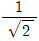
배가 된다.- log2만큼 줄어든다.
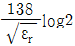
만큼 줄어든다.
(정답률: 알수없음)
60. 길이가 반파장인 2선식 폴디드안테나(도선의 굵기는 같고 두 도선은 충분히 접근해있는 것으로 한다.)의 급전점 임피던스는?
- 36.56Ω
- 73Ω
- 192Ω
- 292Ω
(정답률: 알수없음)
4과목: 무선통신 시스템
61. 셀룰러 시스템에서 주파수 재사용 거리 D는?
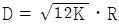
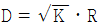
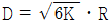
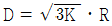
(정답률: 알수없음)
62. UHF대를 사용하는 통신망을 설계할 때 치국 계획상 고려해야 할 점이 아닌 것은?
- 총장비 이득
- 총경로 손실
- 통신망 성능 평가치
- 전력 소모율
(정답률: 알수없음)
63. 다음 중 공전(대기잡음)이 아닌 것은?
- 클릭
- 험(Hum)잡음
- 그라인더
- 힛싱
(정답률: 알수없음)
64. 마이크로파 중계소 철탑에 취부한 파라보릭 안테나의 급전선으로 절연체인 플리에치렌으로 피복된 타원형 도파관을 실제 시공하고자 할 때 다음 중 맞는 것은?
- 쉴드 피복은 원상태로 유지하도록 하며, 한군데의 피복도 벗기지 말아야 한다.
- 접지하기 위하여 일부 피복을 벗기고 접지클램프를 부착할 수 있다.
- 타원형 도파관은 굽힘성 때문에 E밴드 또는 H밴드 시공을 할수 있다.
- 타원형 도파관은 수직, 수평직선 편파 급전선으로는 부적합한 단점이 있다.
(정답률: 알수없음)
65. 다음 설명 중 틀린것은?
- 실제의 증폭기는 내부잡음이 있으므로 잡음지수는 1보다 크다.
- 무선통신방식의 최대 결점은 간섭이 있다는 것이다.
- 회로의 잡음은 완전하게 제거할수 있다.
- 비접지 안테나를 이용하면 공전을 경감시킬 수 있다.
(정답률: 알수없음)
66. 전화통신에 이용되는 PCM에 대한 설명으로 틀린 것은?
- PCM을 위한 표본화 시간단위는 125㎲이다.
- 표본화 주파수는 8㎑이다.
- 음성신호의 대역은 300-3400㎐로 제한한다.
- 음성신호의 대역보다 표본화 대역을 작게 하여야 원신호의 복원을 잘 할수 있다.
(정답률: 알수없음)
67. Spread Spectrum 무선통신방식중 FH방식의 특징이 아닌 것은?
- 포착시간
- 주파수 도약분석기가 반드시 필요하다.
- 원근 문제가 없다.
- 도약주파수가 증가하므로 스펙트럼 확산이 용이하다.
(정답률: 알수없음)
68. PCM통신방식에서 신호를 변환하는 과정에 속하지 않는 것은?
- 표본화
- 지연화
- 양자화
- 부호화
(정답률: 알수없음)
69. ITU에서 공식적으로 통신위성의 종류를 서비스분야에서 볼 때 3가지 대별한다. 다음중 해당되지 않은 것은?
- FSS
- TSS
- BSS
- MSS
(정답률: 알수없음)
70. Direct Sequence와 같은 대역확산방식을 사용하여 Fading과 Jamming의 영향을 감소시킬수 있는 다자간 접속방법은?
- FDMA
- TDMA
- CDMA
- DFDMA
(정답률: 알수없음)
71. 위성통신의 장점이 아닌 것은?
- 많은 통신용량
- 향상된 Error rate
- 통신의 비밀보장
- 주파수 변별기
(정답률: 알수없음)
72. 위성통신의 다원접속방식중에서 CDMA 방식을 실현하기 위한 스펙트럼 확산 기술이 아닌 것은?
- 직접확산방식
- 주파수 호핑방식
- 시간호핑방식
- 위상호핑방식
(정답률: 알수없음)
73. 다음 중 무선송신기에 사용되지 않는 회로는?
- 변조회로
- AGC회로
- 고출력 증폭회로
- 구동 증폭회로
(정답률: 알수없음)
74. 다음 위성통신에 사용하는 위성 통신안테나의 기능을 맞게 연결한 것은?
- 무지향성 안테나 - 넓은 지역을 커버하는 Beam을 만드는데 사용한다.
- horn안테나 - 명령 및 텔리메트리 신호의 통신을 위하여 사용한다.
- 파라볼라 안테나 - 좁은 지역에 대한 Spot Beam을 만드는데 사용한다.
- 헤리컬 안테나 - 비교적 높은 주파수대에서 사용한다.
(정답률: 알수없음)
75. 다음 통신위성중 미국에서 제일 먼저 발사된 위성은?
- Telstar
- Echo-Ⅰ
- score
- SYNCOM-Ⅱ
(정답률: 알수없음)
76. 주파수 분할 FM통신방식의 특징에 해당하지 않는 것은?
- 광대역 전송이 가능하다.
- 간섭파의 방해가 강하다.
- 초다중 신호의 전송에 적합하다.
- 중계기에 의해 전송 신호대역의 주파수 특성이 변화한다.
(정답률: 알수없음)
77. 기지국으로부터 송신반송파 주파수가 fc이고, 이동국이 u속도로 수신파에 대해 θ의 방향으로 움직이고 있는 경우 수신되는 신호 fr은?
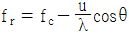
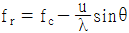
(정답률: 알수없음)
78. 주파수 분할 다중(FDM)방식에서 주로 사용되고 있는 복합변조방식은?
- SS-AM
- SS-FM
- SS-SS
- SS-PM
(정답률: 알수없음)
79. Squelch회로의 입력은 어느단에서 얻는 것이 적합한가?
- 고주파 증폭단
- 중간주파 증폭단
- 저주파 증폭단
- 주파수 변별기
(정답률: 알수없음)
80. 이동통신에 있어서 음성신호 처리의 방법을 옳게 짝지은 것은?
- 진폭 변환처리 : 선형 변환처리
- 주파수 변환처리 : 비선형 변환처리
- 시간-진폭 변환처리 : 비선형 변환처리
- 주파수-시간 변환처리 : 선형 변환처리
(정답률: 알수없음)
5과목: 전자계산기 일반 및 무선설비기준
81. 수치 자료 표현 방법에서 부동 소수점 표현을 가장 가장 적절하게 설명한 것은?
- 부동 소수점 표현 방법에는 부호부, 가수부로 구분할수 있다.
- 정밀도가 요구되는 과학 및 공학 또는 수학적인 응용에 주로 사용된다.
- 수를 표현하는 자리수는 고정 소수점에 비하여 적게 든다.
- 수 표현 방법이 고정 소수점에 비하여 간단하다.
(정답률: 알수없음)
82. 다음중 인증이 면제되는 정보통신기기에 해당하지 않는 것은?
- 시험ㆍ연구를 위하여 제조하거나 수입하는 인증대상 정보통신기기
- 국내에서 판매하지 않고 수출전용으로 제조하는 인증대상 정보통신기기
- 디지털 선택호출장치등을 이용하여 통신을 행하는 해상이동 업무용 무선국의 송신장치 및 수신장치의 기기
- 전자파 적합등록을 한 주 컴퓨터시스템의 유지, 보수를 위하여 수입하는 전자파적합등록 대상기기의 구성품
(정답률: 알수없음)
83. 마이크로프로세서의 전송명령없이 데이터를 입출력장치에서 메모리로 전송할수 있는 것은?
- DMA
- Interrupt
- FIFO
- SCAN
(정답률: 알수없음)
84. 마이크로프로세서에서 인터럽트 발생시에 돌아올 주소를 어디에 저장하고 인터럽트 처리 루틴으로 가는가?
- ALU
- STACK POINTER
- PROGRAM COUNTER
- STATUS REGISTER
(정답률: 알수없음)
85. 다음과 같은 32비트의 2의 보수형식의 고정 소수점의 수가 표현할수 있는 최대값은?
- 231-1
- 231+1
- 232
- 231
(정답률: 알수없음)
86. 기억장치의 계층에서 가장 속도가 빠른 것은?
- 주기억장치
- 보조기억장치
- 캐쉬기억장치
- 코아기억장치
(정답률: 알수없음)
87. 다음 중 공중선계의 충족조건으로 적합하지 않는 것은?
- 공중선은 이득이 높고 능률이 좋을 것
- 정합이 충분할 것
- 만족스러운 지향성을 얻을수 있을 것
- 급전선으로부터의 복사가 클 것
(정답률: 알수없음)
88. 파이프라인에 의한 이론적 최대 증가율을 내지 못하는 주된 이유가 아닌 것은?
- 병목현상
- 자원회피
- 데이터 의존성
- 분기곤란
(정답률: 알수없음)
89. 다음 중에서 정보통신기기 인증규칙에서 “인증표시”에 해당되지 않은 것은?
- 형식승인표시
- 형식등록표시
- 전자파적합등록표장
- 전파환경측정표시
(정답률: 알수없음)
90. 의료용 전파응용설비의 안전시설에 관한 규정이다. 틀린 것은?
- 인체의 안전을 위하여 접지장치를 설치할 것
- 의료전극과 그 도선은 직접 인체에 닿지 아니하도록 양호한 절연체로 덮을 것
- 고압전기에 의하여 충전되는 기구와 전선은 외부에서 용이하게 조정할수 있도록 밖으로 노출되어 있을 것
- 의료전극 및 그 도선과 발진기등 사이에서의 절연저항은 500볼트용 절연저항시험기에 의하여 측정하여 50메가옴 이상일 것
(정답률: 알수없음)
91. 전파관계법에서 안전시설을 해야하는 고압전기는 얼마를 초과하는 전기를 말하는가?
- 고주파 또는 교류전압 300볼트, 직류전압 550볼트
- 고주파 또는 교류전압 500볼트, 직류전압 650볼트
- 고주파 또는 교류전압 600볼트, 직류전압 750볼트
- 고주파 또는 교류전압 700볼트, 직류전압 850볼트
(정답률: 알수없음)
92. 2진수 1100101을 8진수로 변환하면 다음 중 어느것에 해당하는가?
- (102)8
- (107)8
- (141)8
- (145)8
(정답률: 알수없음)
93. 입출력 과정에서 CPU의 역할이 가장 큰 방식은?
- Programmed I/O
- Interrupt-Driver I/O
- DMA
- Chaanel I/O
(정답률: 알수없음)
94. 공중선 전력의 표시방법 중 평균전력은 어느것으로 표시하는가?
- PX
- PR
- PY
- PZ
(정답률: 알수없음)
95. 다음 중 수신설비로부터 부차적으로 발사되는 전파의 세기는 수신공중선과 전기적 상수가 같은 의사공중선회로를 사용하여 측정한 경우에 어느정도인가?
- -54데시벨밀리와트(dBmW)이하
- +54데시벨밀리와트(dBmW)이하
- -100데시벨밀리와트(dBmW)이하
- +100데시벨밀리와트(dBmW)이하
(정답률: 알수없음)
96. 무변조상태에서 송신장치로부터 송신공중선계의 급전선에 공급되는 전력으로서 무선주파수의 1주기동안에 걸쳐 평균한 것은?
- 평균전력
- 첨두포락선전력
- 반송파전력
- 규격전력
(정답률: 알수없음)
97. 다음중 공중선전력이 50㎾인 KBS TV 송신소에서 실제 발사할 수 있는 공중선 전력의 허용치는?
- 40㎾~50㎾
- 40㎾~50.5㎾
- 40.5㎾~55㎾
- 50.5㎾~60.5㎾
(정답률: 알수없음)
98. 순서도의 기본형태가 아닌 것은?
- 직선형 순서도
- 분기형 순서도
- 세분화형 순서도
- 반복형 순서도
(정답률: 알수없음)
99. 다음 중 문자의 표시와 관계 적은 것은?
- BCD코드
- EBCDIC코드
- 그레이코드
- ASCII코드
(정답률: 알수없음)
100. 정보통신부장관이 전파자원을 확보하기 위하여 수립ㆍ시행하여야 할 시책과 관계 적은 것은?
- 새로운 주파수의 이용기술 개발
- 이용중인 주파수의 이용효율 향상
- 주파수의 국내등록
- 국가간 전파혼신의 해소와 이의 방지를 위한 협의와 조정
(정답률: 알수없음)